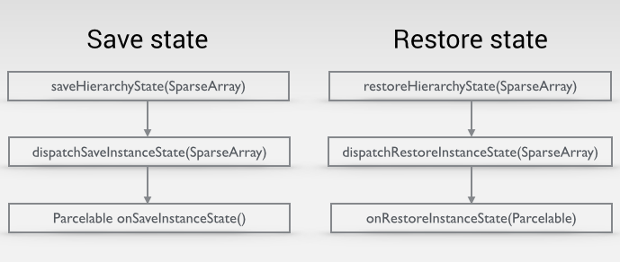
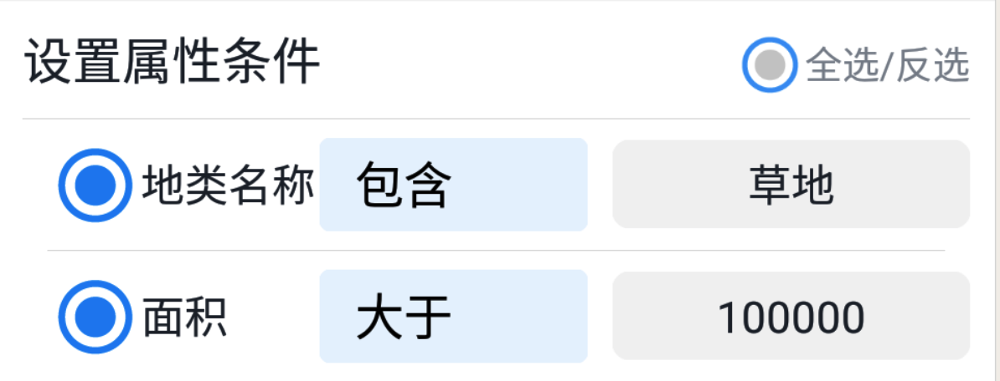
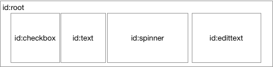

<!DOCTYPE html>


  


<html class="theme-next gemini use-motion" lang="zh-Hans">
<head>
  <meta charset="UTF-8"/>
<meta http-equiv="X-UA-Compatible" content="IE=edge" />
<meta name="viewport" content="width=device-width, initial-scale=1, maximum-scale=1"/>
<meta name="theme-color" content="#222">


<meta http-equiv="Cache-Control" content="no-transform" />
<meta http-equiv="Cache-Control" content="no-siteapp" />


  
  
  <link href="/lib/fancybox/source/jquery.fancybox.css?v=2.1.5" rel="stylesheet" type="text/css" />


<link href="/lib/font-awesome/css/font-awesome.min.css?v=4.6.2" rel="stylesheet" type="text/css" />

<link href="/css/main.css?v=5.1.4" rel="stylesheet" type="text/css" />


  <link rel="apple-touch-icon" sizes="180x180" href="/images/apple-touch-icon-next.png?v=5.1.4">


  <link rel="icon" type="image/png" sizes="32x32" href="/images/favicon-32x32-next.png?v=5.1.4">


  <link rel="icon" type="image/png" sizes="16x16" href="/images/favicon-16x16-next.png?v=5.1.4">


  <link rel="mask-icon" href="/images/logo.svg?v=5.1.4" color="#222">


  <meta name="keywords" content="Android,自定义控件," />


  <link rel="alternate" href="/atom.xml" title="HanlyJiang" type="application/atom+xml" />


<meta name="description" content="如何正确的恢复View的状态？  即使您什么都不做，也不实现 onSaveInstanceState()，Activity 类的 onSaveInstanceState() 默认实现也会恢复部分 Activity 状态。具体地讲，默认实现会为布局中的每个 View 调用相应的 onSaveInstanceState() 方法，让每个视图都能提供有关自身的应保存信息。Android 框架中几乎每个小">
<meta name="keywords" content="Android,自定义控件">
<meta property="og:type" content="article">
<meta property="og:title" content="Android View状态的保存与恢复">
<meta property="og:url" content="http://hanlyjiang.cn/2018/04/16/Android-View-Restore/index.html">
<meta property="og:site_name" content="HanlyJiang">
<meta property="og:description" content="如何正确的恢复View的状态？  即使您什么都不做，也不实现 onSaveInstanceState()，Activity 类的 onSaveInstanceState() 默认实现也会恢复部分 Activity 状态。具体地讲，默认实现会为布局中的每个 View 调用相应的 onSaveInstanceState() 方法，让每个视图都能提供有关自身的应保存信息。Android 框架中几乎每个小">
<meta property="og:locale" content="zh-Hans">
<meta property="og:image" content="http://hanlyjiang.cn/2018/04/16/Android-View-Restore/save.png">
<meta property="og:image" content="http://hanlyjiang.cn/2018/04/16/Android-View-Restore/view.png">
<meta property="og:image" content="http://hanlyjiang.cn/2018/04/16/Android-View-Restore/layout.png">
<meta property="og:updated_time" content="2018-04-17T08:52:04.181Z">
<meta name="twitter:card" content="summary">
<meta name="twitter:title" content="Android View状态的保存与恢复">
<meta name="twitter:description" content="如何正确的恢复View的状态？  即使您什么都不做，也不实现 onSaveInstanceState()，Activity 类的 onSaveInstanceState() 默认实现也会恢复部分 Activity 状态。具体地讲，默认实现会为布局中的每个 View 调用相应的 onSaveInstanceState() 方法，让每个视图都能提供有关自身的应保存信息。Android 框架中几乎每个小">
<meta name="twitter:image" content="http://hanlyjiang.cn/2018/04/16/Android-View-Restore/save.png">


<script type="text/javascript" id="hexo.configurations">
  var NexT = window.NexT || {};
  var CONFIG = {
    root: '/',
    scheme: 'Gemini',
    version: '5.1.4',
    sidebar: {"position":"left","display":"post","offset":12,"b2t":false,"scrollpercent":false,"onmobile":false},
    fancybox: true,
    tabs: true,
    motion: {"enable":true,"async":false,"transition":{"post_block":"fadeIn","post_header":"slideDownIn","post_body":"slideDownIn","coll_header":"slideLeftIn","sidebar":"slideUpIn"}},
    duoshuo: {
      userId: '0',
      author: '博主'
    },
    algolia: {
      applicationID: '',
      apiKey: '',
      indexName: '',
      hits: {"per_page":10},
      labels: {"input_placeholder":"Search for Posts","hits_empty":"We didn't find any results for the search: ${query}","hits_stats":"${hits} results found in ${time} ms"}
    }
  };
</script>


  <link rel="canonical" href="http://hanlyjiang.cn/2018/04/16/Android-View-Restore/"/>


  <title>Android View状态的保存与恢复 | HanlyJiang</title>
  


</head>

<body itemscope itemtype="http://schema.org/WebPage" lang="zh-Hans">

  
  
    
  

  <div class="container sidebar-position-left page-post-detail">
    <div class="headband"></div>

    <header id="header" class="header" itemscope itemtype="http://schema.org/WPHeader">
      <div class="header-inner"><div class="site-brand-wrapper">
  <div class="site-meta ">
    

    <div class="custom-logo-site-title">
      <a href="/"  class="brand" rel="start">
        <span class="logo-line-before"><i></i></span>
        <span class="site-title">HanlyJiang</span>
        <span class="logo-line-after"><i></i></span>
      </a>
    </div>
      
        <p class="site-subtitle">千里之行，始于足下</p>
      
  </div>

  <div class="site-nav-toggle">
    <button>
      <span class="btn-bar"></span>
      <span class="btn-bar"></span>
      <span class="btn-bar"></span>
    </button>
  </div>
</div>

<nav class="site-nav">
  

  
    <ul id="menu" class="menu">
      
        
        <li class="menu-item menu-item-home">
          <a href="/" rel="section">
            
              <i class="menu-item-icon fa fa-fw fa-home"></i> <br />
            
            首页
          </a>
        </li>
      
        
        <li class="menu-item menu-item-about">
          <a href="/about/" rel="section">
            
              <i class="menu-item-icon fa fa-fw fa-user"></i> <br />
            
            关于
          </a>
        </li>
      
        
        <li class="menu-item menu-item-tags">
          <a href="/tags/" rel="section">
            
              <i class="menu-item-icon fa fa-fw fa-tags"></i> <br />
            
            标签
          </a>
        </li>
      
        
        <li class="menu-item menu-item-categories">
          <a href="/categories/" rel="section">
            
              <i class="menu-item-icon fa fa-fw fa-th"></i> <br />
            
            分类
          </a>
        </li>
      
        
        <li class="menu-item menu-item-archives">
          <a href="/archives/" rel="section">
            
              <i class="menu-item-icon fa fa-fw fa-archive"></i> <br />
            
            归档
          </a>
        </li>
      

      
    </ul>
  

  
</nav>


 </div>
    </header>

    <main id="main" class="main">
      <div class="main-inner">
        <div class="content-wrap">
          <div id="content" class="content">
            

  <div id="posts" class="posts-expand">
    

  

  
  
  

  <article class="post post-type-normal" itemscope itemtype="http://schema.org/Article">
  
  
  
  <div class="post-block">
    <link itemprop="mainEntityOfPage" href="http://hanlyjiang.cn/2018/04/16/Android-View-Restore/">

    <span hidden itemprop="author" itemscope itemtype="http://schema.org/Person">
      <meta itemprop="name" content="Hanly Jiang">
      <meta itemprop="description" content="">
      <meta itemprop="image" content="/images/avatar.gif">
    </span>

    <span hidden itemprop="publisher" itemscope itemtype="http://schema.org/Organization">
      <meta itemprop="name" content="HanlyJiang">
    </span>

    
      <header class="post-header">

        
        
          <h1 class="post-title" itemprop="name headline">Android View状态的保存与恢复</h1>
        

        <div class="post-meta">
          <span class="post-time">
            
              <span class="post-meta-item-icon">
                <i class="fa fa-calendar-o"></i>
              </span>
              
                <span class="post-meta-item-text">发表于</span>
              
              <time title="创建于" itemprop="dateCreated datePublished" datetime="2018-04-16T21:51:08+08:00">
                2018-04-16
              </time>
            

            

            
          </span>

          
            <span class="post-category" >
            
              <span class="post-meta-divider">|</span>
            
              <span class="post-meta-item-icon">
                <i class="fa fa-folder-o"></i>
              </span>
              
                <span class="post-meta-item-text">分类于</span>
              
              
                <span itemprop="about" itemscope itemtype="http://schema.org/Thing">
                  <a href="/categories/Android/" itemprop="url" rel="index">
                    <span itemprop="name">Android</span>
                  </a>
                </span>

                
                
              
            </span>
          

          
            
          

          
          

          

          

          

        </div>
      </header>
    

    
    
    
    <div class="post-body" itemprop="articleBody">

      
      

      
        <p>如何正确的恢复View的状态？</p>
<blockquote>
<p>即使您什么都不做，也不实现 onSaveInstanceState()，Activity 类的 onSaveInstanceState() 默认实现也会恢复部分 Activity 状态。具体地讲，默认实现会为布局中的每个 View 调用相应的 onSaveInstanceState() 方法，让每个视图都能提供有关自身的应保存信息。Android 框架中几乎每个小部件都会根据需要实现此方法，以便在重建 Activity 时自动保存和恢复对 UI 所做的任何可见更改。例如，EditText 小部件保存用户输入的任何文本，CheckBox 小部件保存复选框的选中或未选中状态。您只需为想要保存其状态的每个小部件提供一个唯一的 ID（通过 android:id 属性）。如果小部件没有 ID，则系统无法保存其状态。</p>
</blockquote>
<a id="more"></a>
<h2 id="何时触发？"><a href="#何时触发？" class="headerlink" title="何时触发？"></a>何时触发？</h2><ol>
<li>配置变更-旋转屏幕</li>
<li>Fragment 重新恢复</li>
<li>系统关闭App 之后重启从后台恢复</li>
</ol>
<h2 id="View-保存与恢复流程"><a href="#View-保存与恢复流程" class="headerlink" title="View 保存与恢复流程"></a>View 保存与恢复流程</h2><p></p>
<h2 id="条件"><a href="#条件" class="headerlink" title="条件"></a>条件</h2><ol>
<li>View拥有id(且为唯一id)</li>
<li>调用 setSaveEnabled(true)</li>
</ol>
<h2 id="通用做法"><a href="#通用做法" class="headerlink" title="通用做法"></a>通用做法</h2><p>以下代码记录mapView的中心点和层级，并在重启时恢复中心点和层级。<br><figure class="highlight java"><table><tr><td class="gutter"><pre><div class="line">1</div><div class="line">2</div><div class="line">3</div><div class="line">4</div><div class="line">5</div><div class="line">6</div><div class="line">7</div><div class="line">8</div><div class="line">9</div><div class="line">10</div><div class="line">11</div><div class="line">12</div><div class="line">13</div><div class="line">14</div><div class="line">15</div><div class="line">16</div><div class="line">17</div><div class="line">18</div><div class="line">19</div><div class="line">20</div><div class="line">21</div><div class="line">22</div><div class="line">23</div><div class="line">24</div><div class="line">25</div><div class="line">26</div><div class="line">27</div><div class="line">28</div><div class="line">29</div><div class="line">30</div><div class="line">31</div><div class="line">32</div></pre></td><td class="code"><pre><div class="line"><span class="meta">@Nullable</span></div><div class="line">    <span class="meta">@Override</span></div><div class="line">    <span class="function"><span class="keyword">protected</span> Parcelable <span class="title">onSaveInstanceState</span><span class="params">()</span> </span>&#123;</div><div class="line">        <span class="comment">// 保存ParentState</span></div><div class="line">        Bundle state = <span class="keyword">new</span> Bundle();</div><div class="line">        </div><div class="line">        Parcelable superState = <span class="keyword">super</span>.onSaveInstanceState();</div><div class="line">        state.putParcelable(PARENT_STATE, superState);</div><div class="line"></div><div class="line">        <span class="comment">// 扩展自己的state存储</span></div><div class="line">        state.putFloat(STATE_LEVEL, mapView.getLevel());</div><div class="line">        state.putDouble(STATE_CENTER_X, mapView.getCenter().getX());</div><div class="line">        state.putDouble(STATE_CENTER_Y, mapView.getCenter().getY());</div><div class="line">        <span class="keyword">return</span> state;</div><div class="line">    &#125;</div><div class="line"></div><div class="line"></div><div class="line">    <span class="meta">@Override</span></div><div class="line">    <span class="function"><span class="keyword">protected</span> <span class="keyword">void</span> <span class="title">onRestoreInstanceState</span><span class="params">(Parcelable state)</span> </span>&#123;</div><div class="line">        Bundle bundle = (Bundle) state;</div><div class="line">        <span class="comment">// 恢复Parent state</span></div><div class="line">        Parcelable parentState = bundle.getParcelable(PARENT_STATE);</div><div class="line">        <span class="keyword">super</span>.onRestoreInstanceState(parentState);</div><div class="line"></div><div class="line">        <span class="comment">// 恢复自己的 state</span></div><div class="line">        <span class="keyword">float</span> level = bundle.getFloat(STATE_LEVEL);</div><div class="line">        <span class="keyword">double</span> centerX = bundle.getDouble(STATE_CENTER_X);</div><div class="line">        <span class="keyword">double</span> centerY = bundle.getDouble(STATE_CENTER_Y);</div><div class="line"></div><div class="line">        mapView.setCenter(<span class="keyword">new</span> Point(centerX, centerY));</div><div class="line">        mapView.setLevel(level);</div><div class="line">    &#125;</div></pre></td></tr></table></figure></p>
<h2 id="如果id相同呢？"><a href="#如果id相同呢？" class="headerlink" title="如果id相同呢？"></a>如果id相同呢？</h2><blockquote>
<p>看下之前的条件，需要view拥有id，而且id唯一，这是为什么呢？<br>具体请参考： <a href="http://trickyandroid.com/saving-android-view-state-correctly/" target="_blank" rel="external">trickyandroid.com</a>    </p>
</blockquote>
<p>因为所有的View的状态都被存储在一个 <code>SparseArray&lt;Parcelable&gt; container</code>里面，不论其层级。那么不同层级的id有一样的情况下如何处理？    </p>
<p>比方说，我有一个如下界面：<br></p>
<p>其中地类名称和面积是动态生成并加入到视图体系的。每一行的结构都一样，是一个自定义的 <code>PropSetView</code> :<br>    </p>
<p>由于每一行内部的空间id都一样，会导致同样id的view只有一个存储成功，恢复后所有的Item的状态都和最后一个item一致    </p>
<h3 id="解决方法"><a href="#解决方法" class="headerlink" title="解决方法"></a>解决方法</h3><ol>
<li>自动生成 <code>PropSetView</code> 后，为其分配一个唯一id(API17之后可以通过<code>View.generateViewId()</code>方法生成，但是要注意id的恢复)    </li>
<li><code>PropSetView</code> 中重写若干方法，在保存流程中，自己负责存储并恢复自己的子View的状态，不存储到总的SpareArray中，避免id相同覆盖要恢复的状态 :   <figure class="highlight java"><table><tr><td class="gutter"><pre><div class="line">1</div><div class="line">2</div><div class="line">3</div><div class="line">4</div><div class="line">5</div><div class="line">6</div><div class="line">7</div><div class="line">8</div><div class="line">9</div><div class="line">10</div><div class="line">11</div><div class="line">12</div><div class="line">13</div><div class="line">14</div><div class="line">15</div><div class="line">16</div><div class="line">17</div><div class="line">18</div><div class="line">19</div><div class="line">20</div><div class="line">21</div><div class="line">22</div><div class="line">23</div><div class="line">24</div><div class="line">25</div><div class="line">26</div><div class="line">27</div><div class="line">28</div><div class="line">29</div><div class="line">30</div><div class="line">31</div><div class="line">32</div><div class="line">33</div><div class="line">34</div><div class="line">35</div><div class="line">36</div><div class="line">37</div><div class="line">38</div><div class="line">39</div><div class="line">40</div><div class="line">41</div><div class="line">42</div><div class="line">43</div><div class="line">44</div><div class="line">45</div><div class="line">46</div><div class="line">47</div><div class="line">48</div><div class="line">49</div><div class="line">50</div><div class="line">51</div><div class="line">52</div><div class="line">53</div><div class="line">54</div><div class="line">55</div><div class="line">56</div><div class="line">57</div><div class="line">58</div><div class="line">59</div><div class="line">60</div><div class="line">61</div><div class="line">62</div><div class="line">63</div><div class="line">64</div></pre></td><td class="code"><pre><div class="line"><span class="meta">@Override</span></div><div class="line">    <span class="function"><span class="keyword">public</span> Parcelable <span class="title">onSaveInstanceState</span><span class="params">()</span> </span>&#123;</div><div class="line">        Parcelable superState = <span class="keyword">super</span>.onSaveInstanceState();</div><div class="line">        MySavedState ss = <span class="keyword">new</span> MySavedState(superState);</div><div class="line">        ss.childrenStates = <span class="keyword">new</span> SparseArray();</div><div class="line">        <span class="keyword">for</span> (<span class="keyword">int</span> i = <span class="number">0</span>; i &lt; getChildCount(); i++) &#123;</div><div class="line">            getChildAt(i).saveHierarchyState(ss.childrenStates);</div><div class="line">        &#125;</div><div class="line">        <span class="keyword">return</span> ss;</div><div class="line">    &#125;</div><div class="line"></div><div class="line">    <span class="meta">@Override</span></div><div class="line">    <span class="function"><span class="keyword">public</span> <span class="keyword">void</span> <span class="title">onRestoreInstanceState</span><span class="params">(Parcelable state)</span> </span>&#123;</div><div class="line">        MySavedState ss = (MySavedState) state;</div><div class="line">        <span class="keyword">super</span>.onRestoreInstanceState(ss.getSuperState());</div><div class="line">        <span class="keyword">for</span> (<span class="keyword">int</span> i = <span class="number">0</span>; i &lt; getChildCount(); i++) &#123;</div><div class="line">            getChildAt(i).restoreHierarchyState(ss.childrenStates);</div><div class="line">        &#125;</div><div class="line">    &#125;</div><div class="line"></div><div class="line">    <span class="meta">@Override</span></div><div class="line">    <span class="function"><span class="keyword">protected</span> <span class="keyword">void</span> <span class="title">dispatchSaveInstanceState</span><span class="params">(SparseArray&lt;Parcelable&gt; container)</span> </span>&#123;</div><div class="line">        dispatchFreezeSelfOnly(container);</div><div class="line">    &#125;</div><div class="line"></div><div class="line">    <span class="meta">@Override</span></div><div class="line">    <span class="function"><span class="keyword">protected</span> <span class="keyword">void</span> <span class="title">dispatchRestoreInstanceState</span><span class="params">(SparseArray&lt;Parcelable&gt; container)</span> </span>&#123;</div><div class="line">        dispatchThawSelfOnly(container);</div><div class="line">    &#125;</div><div class="line"></div><div class="line">    <span class="keyword">static</span> <span class="class"><span class="keyword">class</span> <span class="title">MySavedState</span> <span class="keyword">extends</span> <span class="title">BaseSavedState</span> </span>&#123;</div><div class="line">        <span class="keyword">public</span> <span class="keyword">static</span> <span class="keyword">final</span> ClassLoaderCreator&lt;MySavedState&gt; CREATOR</div><div class="line">                = <span class="keyword">new</span> ClassLoaderCreator&lt;MySavedState&gt;() &#123;</div><div class="line">            <span class="meta">@Override</span></div><div class="line">            <span class="function"><span class="keyword">public</span> MySavedState <span class="title">createFromParcel</span><span class="params">(Parcel source, ClassLoader loader)</span> </span>&#123;</div><div class="line">                <span class="keyword">return</span> <span class="keyword">new</span> MySavedState(source, loader);</div><div class="line">            &#125;</div><div class="line"></div><div class="line">            <span class="meta">@Override</span></div><div class="line">            <span class="function"><span class="keyword">public</span> MySavedState <span class="title">createFromParcel</span><span class="params">(Parcel source)</span> </span>&#123;</div><div class="line">                <span class="keyword">return</span> createFromParcel(<span class="keyword">null</span>);</div><div class="line">            &#125;</div><div class="line"></div><div class="line">            <span class="keyword">public</span> MySavedState[] newArray(<span class="keyword">int</span> size) &#123;</div><div class="line">                <span class="keyword">return</span> <span class="keyword">new</span> MySavedState[size];</div><div class="line">            &#125;</div><div class="line">        &#125;;</div><div class="line">        SparseArray childrenStates;</div><div class="line"></div><div class="line">        MySavedState(Parcelable superState) &#123;</div><div class="line">            <span class="keyword">super</span>(superState);</div><div class="line">        &#125;</div><div class="line"></div><div class="line">        <span class="function"><span class="keyword">private</span> <span class="title">MySavedState</span><span class="params">(Parcel in, ClassLoader classLoader)</span> </span>&#123;</div><div class="line">            <span class="keyword">super</span>(in);</div><div class="line">            childrenStates = in.readSparseArray(classLoader);</div><div class="line">        &#125;</div><div class="line"></div><div class="line">        <span class="meta">@Override</span></div><div class="line">        <span class="function"><span class="keyword">public</span> <span class="keyword">void</span> <span class="title">writeToParcel</span><span class="params">(Parcel out, <span class="keyword">int</span> flags)</span> </span>&#123;</div><div class="line">            <span class="keyword">super</span>.writeToParcel(out, flags);</div><div class="line">            out.writeSparseArray(childrenStates);</div><div class="line">        &#125;</div><div class="line">    &#125;</div></pre></td></tr></table></figure>
</li>
</ol>
<h2 id="参考："><a href="#参考：" class="headerlink" title="参考："></a>参考：</h2><ol>
<li><a href="https://developer.android.com/guide/topics/resources/runtime-changes.html#RetainingAnObject" target="_blank" rel="external">Google-在配置变更期间保留对象
</a></li>
<li><a href="http://trickyandroid.com/saving-android-view-state-correctly/" target="_blank" rel="external">Saving Android View state correctly - trickyandroid.com</a></li>
<li><a href="https://developer.android.com/guide/components/activities.html" target="_blank" rel="external">Google-保存 Activity 状态</a>    </li>
</ol>

      
    </div>
    
    
    

    

    

    

    <footer class="post-footer">
      
        <div class="post-tags">
          
            <a href="/tags/Android/" rel="tag"># Android</a>
          
            <a href="/tags/自定义控件/" rel="tag"># 自定义控件</a>
          
        </div>
      

      
      
      

      
        <div class="post-nav">
          <div class="post-nav-next post-nav-item">
            
              <a href="/2018/04/12/2018/AI切图留边/" rel="next" title="AI切图留边">
                <i class="fa fa-chevron-left"></i> AI切图留边
              </a>
            
          </div>

          <span class="post-nav-divider"></span>

          <div class="post-nav-prev post-nav-item">
            
              <a href="/2018/06/09/2018/iOS企业应用发布/" rel="prev" title="iOS 企业应用内部发布">
                iOS 企业应用内部发布 <i class="fa fa-chevron-right"></i>
              </a>
            
          </div>
        </div>
      

      
      
    </footer>
  </div>
  
  
  
  </article>


    <div class="post-spread">
      
    </div>
  </div>


          </div>
          


          

  


        </div>
        
          
  
  <div class="sidebar-toggle">
    <div class="sidebar-toggle-line-wrap">
      <span class="sidebar-toggle-line sidebar-toggle-line-first"></span>
      <span class="sidebar-toggle-line sidebar-toggle-line-middle"></span>
      <span class="sidebar-toggle-line sidebar-toggle-line-last"></span>
    </div>
  </div>

  <aside id="sidebar" class="sidebar">
    
    <div class="sidebar-inner">

      

      
        <ul class="sidebar-nav motion-element">
          <li class="sidebar-nav-toc sidebar-nav-active" data-target="post-toc-wrap">
            文章目录
          </li>
          <li class="sidebar-nav-overview" data-target="site-overview-wrap">
            站点概览
          </li>
        </ul>
      

      <section class="site-overview-wrap sidebar-panel">
        <div class="site-overview">
          <div class="site-author motion-element" itemprop="author" itemscope itemtype="http://schema.org/Person">
            
              <p class="site-author-name" itemprop="name">Hanly Jiang</p>
              <p class="site-description motion-element" itemprop="description">Android 开发，程序员</p>
          </div>

          <nav class="site-state motion-element">

            
              <div class="site-state-item site-state-posts">
              
                <a href="/archives/">
              
                  <span class="site-state-item-count">25</span>
                  <span class="site-state-item-name">日志</span>
                </a>
              </div>
            

            
              
              
              <div class="site-state-item site-state-categories">
                <a href="/categories/index.html">
                  <span class="site-state-item-count">20</span>
                  <span class="site-state-item-name">分类</span>
                </a>
              </div>
            

            
              
              
              <div class="site-state-item site-state-tags">
                <a href="/tags/index.html">
                  <span class="site-state-item-count">33</span>
                  <span class="site-state-item-name">标签</span>
                </a>
              </div>
            

          </nav>

          
            <div class="feed-link motion-element">
              <a href="/atom.xml" rel="alternate">
                <i class="fa fa-rss"></i>
                RSS
              </a>
            </div>
          

          

          
          

          
          

          

        </div>
      </section>

      
      <!--noindex-->
        <section class="post-toc-wrap motion-element sidebar-panel sidebar-panel-active">
          <div class="post-toc">

            
              
            

            
              <div class="post-toc-content"><ol class="nav"><li class="nav-item nav-level-2"><a class="nav-link" href="#何时触发？"><span class="nav-number">1.</span> <span class="nav-text">何时触发？</span></a></li><li class="nav-item nav-level-2"><a class="nav-link" href="#View-保存与恢复流程"><span class="nav-number">2.</span> <span class="nav-text">View 保存与恢复流程</span></a></li><li class="nav-item nav-level-2"><a class="nav-link" href="#条件"><span class="nav-number">3.</span> <span class="nav-text">条件</span></a></li><li class="nav-item nav-level-2"><a class="nav-link" href="#通用做法"><span class="nav-number">4.</span> <span class="nav-text">通用做法</span></a></li><li class="nav-item nav-level-2"><a class="nav-link" href="#如果id相同呢？"><span class="nav-number">5.</span> <span class="nav-text">如果id相同呢？</span></a><ol class="nav-child"><li class="nav-item nav-level-3"><a class="nav-link" href="#解决方法"><span class="nav-number">5.1.</span> <span class="nav-text">解决方法</span></a></li></ol></li><li class="nav-item nav-level-2"><a class="nav-link" href="#参考："><span class="nav-number">6.</span> <span class="nav-text">参考：</span></a></li></ol></div>
            

          </div>
        </section>
      <!--/noindex-->
      

      

    </div>
  </aside>


        
      </div>
    </main>

    <footer id="footer" class="footer">
      <div class="footer-inner">
        <div class="copyright">&copy; <span itemprop="copyrightYear">2018</span>
  <span class="with-love">
    <i class="fa fa-user"></i>
  </span>
  <span class="author" itemprop="copyrightHolder">Hanly Jiang</span>

  
</div>


  <div class="powered-by">由 <a class="theme-link" target="_blank" href="https://hexo.io">Hexo</a> 强力驱动</div>


  <span class="post-meta-divider">|</span>


  <div class="theme-info">主题 &mdash; <a class="theme-link" target="_blank" href="https://github.com/iissnan/hexo-theme-next">NexT.Gemini</a> v5.1.4</div>


        


        
      </div>
    </footer>

    
      <div class="back-to-top">
        <i class="fa fa-arrow-up"></i>
        
      </div>
    

    

  </div>

  

<script type="text/javascript">
  if (Object.prototype.toString.call(window.Promise) !== '[object Function]') {
    window.Promise = null;
  }
</script>


  


  
  
    <script type="text/javascript" src="/lib/jquery/index.js?v=2.1.3"></script>
  

  
  
    <script type="text/javascript" src="/lib/fastclick/lib/fastclick.min.js?v=1.0.6"></script>
  

  
  
    <script type="text/javascript" src="/lib/jquery_lazyload/jquery.lazyload.js?v=1.9.7"></script>
  

  
  
    <script type="text/javascript" src="/lib/velocity/velocity.min.js?v=1.2.1"></script>
  

  
  
    <script type="text/javascript" src="/lib/velocity/velocity.ui.min.js?v=1.2.1"></script>
  

  
  
    <script type="text/javascript" src="/lib/fancybox/source/jquery.fancybox.pack.js?v=2.1.5"></script>
  


  


  <script type="text/javascript" src="/js/src/utils.js?v=5.1.4"></script>

  <script type="text/javascript" src="/js/src/motion.js?v=5.1.4"></script>


  
  


  <script type="text/javascript" src="/js/src/affix.js?v=5.1.4"></script>

  <script type="text/javascript" src="/js/src/schemes/pisces.js?v=5.1.4"></script>


  
  <script type="text/javascript" src="/js/src/scrollspy.js?v=5.1.4"></script>
<script type="text/javascript" src="/js/src/post-details.js?v=5.1.4"></script>


  


  <script type="text/javascript" src="/js/src/bootstrap.js?v=5.1.4"></script>


  


  


	


  


  


  


  

  

  

  
  

  

  

  

</body>
</html>
